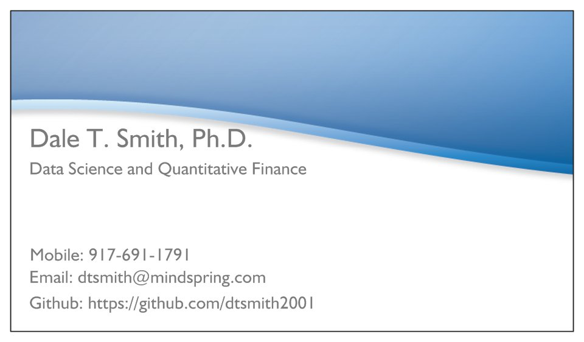

Data science skillsets: database management, statistics and machine learning, and distributed and parallel systems.
David Merkel wrote a series of blog posts on learning to be a corporate bond manager. Maybe you will find this interesting.
I wrote a Post Doctoral Fellowship proposal on modeling nonlinear oscillations of bridges and related problems with ships. Yes, this does include several potential models of the Tacoma-Narrows Bridge, which collapsed on November 7, 1940. There are some still photos (large inline images) taken from the 20 minute film of the bridge made in the final few minutes before its collapse.
Last updated January 27, 2016. Nothing on these pages should be taken as a solicitation to buy or sell any securities mentioned here. The author, Dale T. Smith, is not a registered investment advisor, registered representative, or licensed as a commodity pool operator. All investments have some risk, even 30-day Treasury bills (eg interest rate risk), so please make sure you understand the risks involved before making any investment. These pages (except those I got from others) are Copyright © 1996-2013 by Dale T. Smith. All rights reserved.
URL: http://dtsmith.home.mindspring.com/